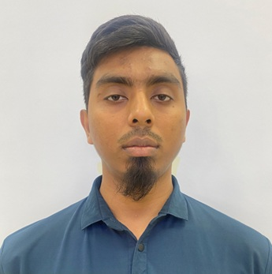

Hadiuzzaman is an M.Eng. student in Environmental Engineering at Chulalongkorn University, supported by the ASEAN non-ASEAN Scholarship. He brings over four years of professional experience as a Junior Engineer at the Institute of Water Modelling and as an Adjunct Lecturer at Presidency University in Bangladesh, combining hands-on hydrological fieldwork with undergraduate teaching.
His current research in the CCC Lab centers on steel slag as a sustainable construction material, exploring its potential as a partial cement replacement within low-carbon concrete systems. This work bridges waste valorization, circular economy thinking, and sustainable infrastructure — drawing on his background in Water Resources Engineering and his experience with environmental modeling and spatial data processing.
Impact of Structural Intervention and Hydroclimatic Event on River Bank Erosion Using Temporal Satellite Images: A Case Analysis on Jamuna River of Bangladesh
5th International Conference on Advances in Civil Engineering (ICACE-2020) · March 4–6 · id:667, pp. 1192–1198
Proceedings PDF ↗